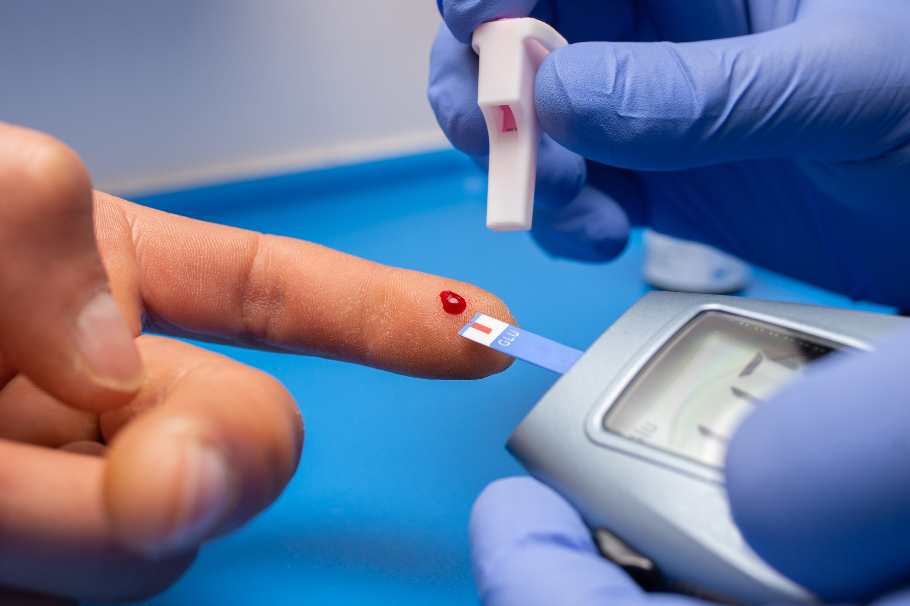

REVERSE
DIABETES.
Reverse Type-2 Diabetes Only @ ₹20,000
Safely, Scientifically,
Sustainably
Fittr goes beyond management — we guide you to reversal with science and continuous monitoring.
400K+
Clinical Wins
4.8/5
Patient Rating

Why Diabetes Reversal at Fittr Is Different
Most programs stop at advice. Fittr takes ownership of your entire health journey.
Fittr is a full-stack preventive healthcare ecosystem with all capabilities in-house:
100s of success stories of diabetes reversal in community
450K+ transformations delivered globally
Diagnostic testing & biomarker reviews (NCD clinic capabilities)
Personalised Fitness & nutrition by 700+ certified coaches
1-1 support from coaches & 30+ collaborating doctors
Periodic reassessments & data-driven plan optimisation
What Do We Mean by
Diabetes Reversal?
Eliminated dependency on medication! That's the Goal.
At Fittr, diabetes reversal refers to achieving and sustaining healthy blood glucose levels (HbA1c) through lifestyle interventions, with eliminated dependency on medication by gradual reduction, under medical supervision (World Health Organisation).
This aligns with global diabetes remission frameworks:
⚠️ Medication changes are never abrupt and are coordinated with your treating doctor.
Diabetes Specialists
India's leading experts in Diabetes Remission, helping you move from management to reversal.
.jpg)